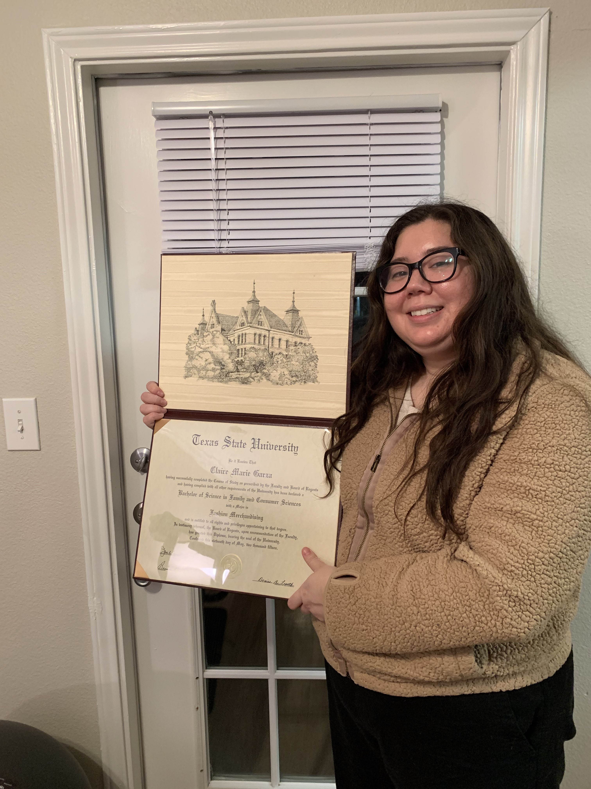
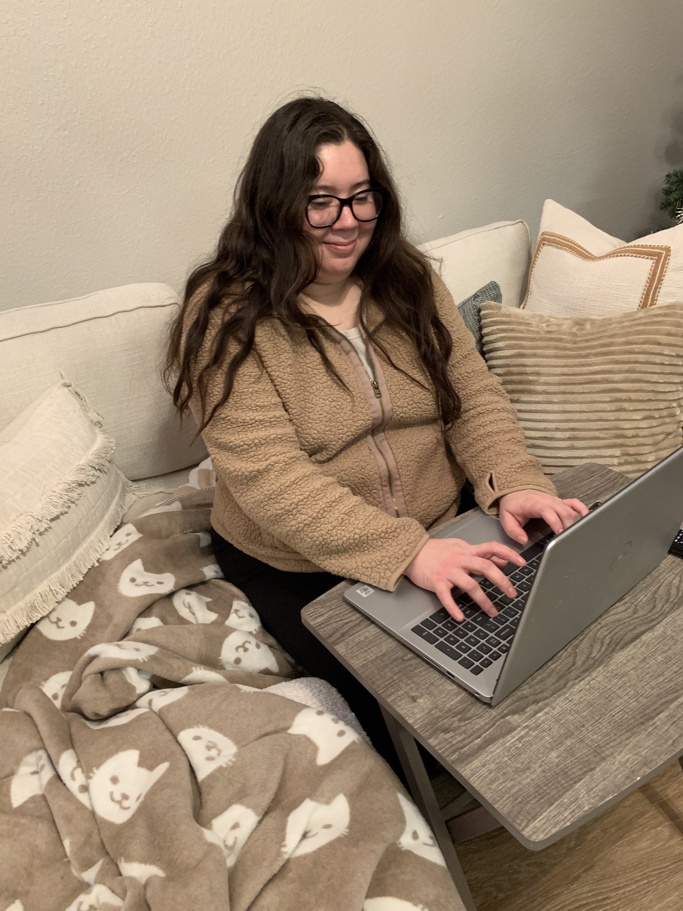
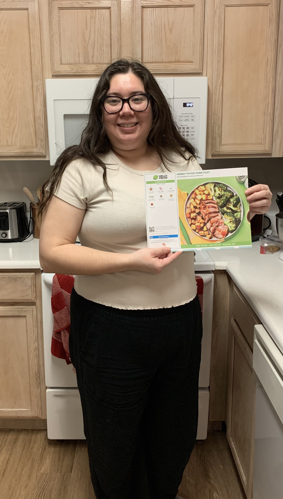

Achieving a Degree
Claire completed college with a Bachelor of Science in Consumer Science.
She majored in Fashion merchandising and minored in business admin.
Showing off degree

New Job, New Skills

Taking Calls for Veterans
Claire recently got a new job where she responds to call from veterans seeking medical information.
It was her second time using a computer heavily for her job, and she is excited about the skills she is building with it.
Cooking at Home
With the New Year, Claire aims to cook and eat at home more often, rather than eating out.
She decided to start with Hello Fresh to help her learn how to cook and build a library of recipes
Starting with Hello Fresh
